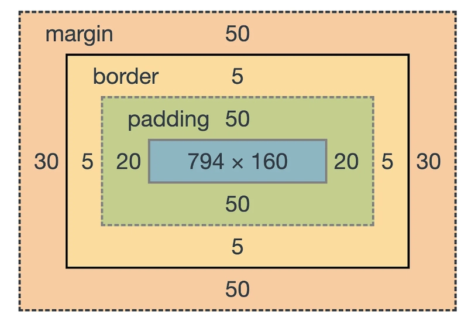

CSS Styling
🎨 Styling the Web
What is CSS? CSS (Cascading Style Sheets) is the "skin" or stylist for your HTML structure. It controls the visual appearance of your content—things like colors, fonts, layouts, and spacing. CSS separates presentation from structure, making your code cleaner and easier to manage.
Selectors and Declarations
Selectors: is a pattern used to select, or target, the HTML elements to which a set of CSS declarations (styles) will be applied. It identifies which specific elements on a web page should receive the defined styling.
Declarations: defines a specific style to be applied to an HTML element. It consists of a property and a value, separated by a colon, and terminated by a semicolon.
Selectors
This text's font size changes with the slider.
Current Font Size: 16px
Declarations
Box Model
